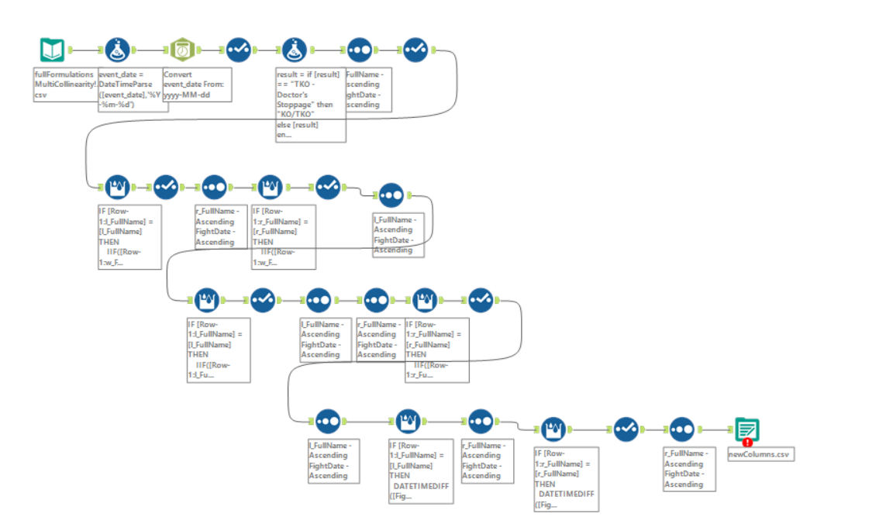
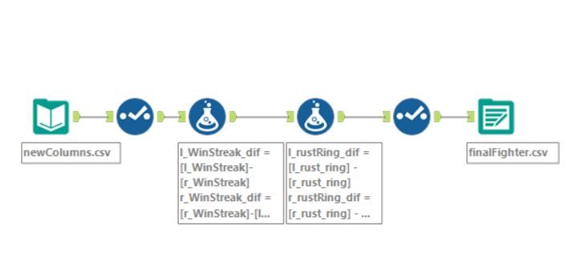
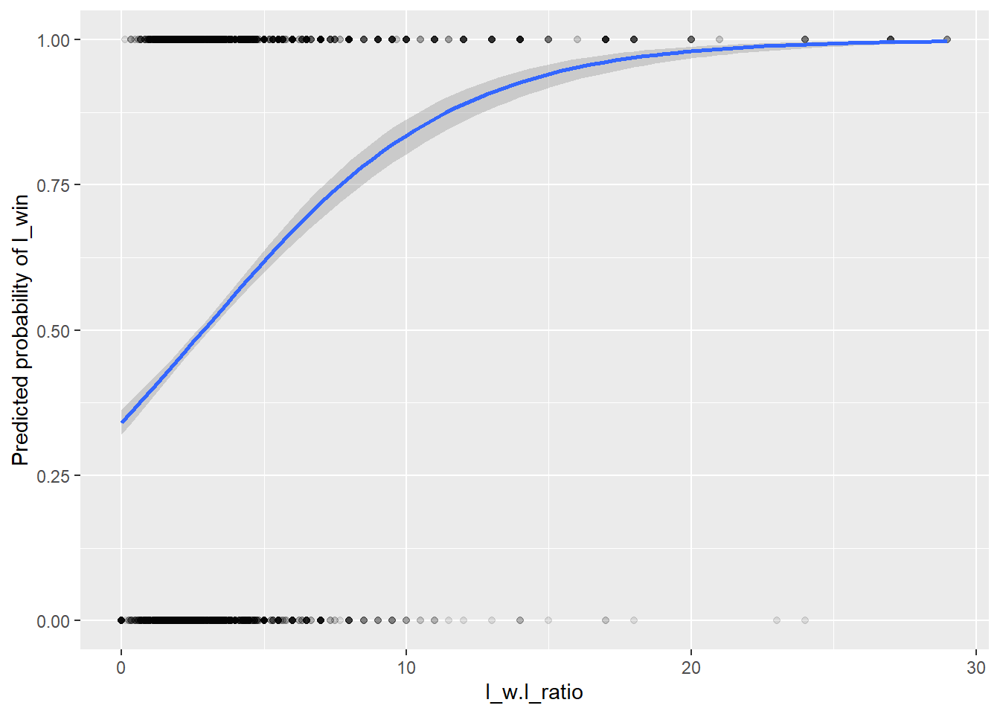

library(MASS)
library(caret)
library(rattle)
library(ggplot2)
library(boot)
library(tidyverse)UFCProj
Project Goal
To predict winners of UFC fights from available data (or data calculated from available data).
Source Data
Kaggle Datasets: Link
There are four datasets linked through foreign keys, so the first step was to wrangle the data from each dataset into one usable source. To do this, we used alteryx:
Joining Datasets

Here, datasets were joined on keys, and each row shows a fight. To distinguish fighters in the same fight, an arbitrary prefix was assigned to the fighters characteristics, being l and r (for left and right). The reason for this is that if we analyzed fighters in the same fight, the predictor variables would have very high multicollinearity. More on this later.
Calculating Predictor Variables

Here, we calculated new columns to be used during analysis. These columns were things like seniority (how much older a fighter was than the other. For example, the l_seniority column records how much older the left fighter was than the right fighter. A value of 4 in that column would mean the left fighter was 4 years older than the right fighter). Note - when building models later on, l_seniority and r_seniority would never be in the same model because they are opposites. Other variables were things like weight difference, reach difference, win loss ratio difference, etc.
More Calculated Predictors

These columns were added later on in the time frame of the project, just to try out some more predictors. These included win streaks the fighters were on before the fight, TKOs received (how many times they’d been knocked out before the fight - cumulative), and how long it had been since their last fight (rustiness). Spoiler - win streak was the only relevant variable from these calculations found during model testing
Differences of New Columns

These last formulations were just calculating differences between the new columns like win streak, so a value of 4 in the l_win_streak_dif column would mean that the left fighter is on a win streak four higher than the right fighter. Our thought process was that this could translate to confidence in a fight.
Loading Data and Summary Stats
data <- read.csv('https://raw.githubusercontent.com/lwhite01/Data/main/finalFighter.csv')
head(data) l_FullName r_FullName w_FullName FightDate l_win r_win
1 Spike Carlyle Aalon Cruz Spike Carlyle 2020-02-29 1 0
2 Andrei Arlovski Aaron Brink Andrei Arlovski 2000-11-17 1 0
3 Matt Hobar Aaron Phillips Matt Hobar 2014-08-23 1 0
4 Gaston Bolanos Aaron Phillips Gaston Bolanos 2023-04-15 1 0
5 Robbie Lawler Aaron Riley Robbie Lawler 2002-05-10 1 0
6 Spencer Fisher Aaron Riley Spencer Fisher 2006-01-16 1 0
l_seniority r_seniority l_w.l_ratio r_w.l_ratio l_height_dif_cm
1 -4 4 3.000000 2.000000 -10.160000
2 -5 5 1.545455 1.000000 0.000000
3 2 -2 3.000000 2.400000 2.540009
4 -3 3 2.333333 2.400000 -5.080002
5 -1 1 1.875000 2.142857 7.619995
6 4 -4 2.666667 2.142857 -2.540009
r_height_dif_cm l_weight_dif_lb r_weight_dif_lb l_reach_dif_cm r_reach_dif_cm
1 10.160000 0 0 -17.780000 17.780000
2 0.000000 35 -35 2.580002 -2.580002
3 -2.540009 0 0 -2.539993 2.539993
4 5.080002 0 0 -5.080002 5.080002
5 -7.619995 15 -15 12.700010 -12.700010
6 2.540009 0 0 -2.539993 2.539993
l_total_fights r_total_fights l_total_fights_dif r_total_fights_dif
1 12 12 0 0
2 56 52 4 -4
3 12 17 -5 5
4 10 17 -7 7
5 46 44 2 -2
6 33 44 -11 11
l_win_difference r_win_difference l_WinStreak r_WinStreak l_TKOReceived
1 1.00000000 -1.00000000 0 0 0
2 0.54545450 -0.54545450 0 0 0
3 0.59999990 -0.59999990 0 0 1
4 -0.06666684 0.06666684 0 0 0
5 -0.26785707 0.26785707 0 0 0
6 0.52380967 -0.52380967 0 0 0
r_TKOReceived l_WinStreak_dif r_WinStreak_dif l_TKOReceived_dif
1 0 0 0 0
2 0 0 0 0
3 0 0 0 1
4 0 0 0 0
5 0 0 0 0
6 0 0 0 0
r_TKOReceived_dif l_rust_ring r_rust_ring l_rustRing_dif r_rustRing_dif
1 0 0 0 0 0
2 0 0 0 0 0
3 -1 84 0 84 -84
4 0 0 3157 -3157 3157
5 0 0 0 0 0
6 0 0 1347 -1347 1347summary(data) l_FullName r_FullName w_FullName FightDate
Length:7186 Length:7186 Length:7186 Length:7186
Class :character Class :character Class :character Class :character
Mode :character Mode :character Mode :character Mode :character
l_win r_win l_seniority r_seniority
Min. :0.0000 Min. :0.0000 Min. :-23.0000 Min. :-17.0000
1st Qu.:0.0000 1st Qu.:0.0000 1st Qu.: -3.0000 1st Qu.: -4.0000
Median :1.0000 Median :0.0000 Median : 0.0000 Median : 0.0000
Mean :0.5014 Mean :0.4986 Mean : 0.0892 Mean : -0.0892
3rd Qu.:1.0000 3rd Qu.:1.0000 3rd Qu.: 4.0000 3rd Qu.: 3.0000
Max. :1.0000 Max. :1.0000 Max. : 17.0000 Max. : 23.0000
NA's :213 NA's :213
l_w.l_ratio r_w.l_ratio l_height_dif_cm r_height_dif_cm
Min. : 0.000 Min. : 0.000 Min. :-33.0200 Min. :-22.8600
1st Qu.: 1.818 1st Qu.: 1.833 1st Qu.: -5.0800 1st Qu.: -5.0800
Median : 2.333 Median : 2.385 Median : 0.0000 Median : 0.0000
Mean : 3.049 Mean : 3.037 Mean : -0.2411 Mean : 0.2411
3rd Qu.: 3.333 3rd Qu.: 3.333 3rd Qu.: 5.0800 3rd Qu.: 5.0800
Max. :29.000 Max. :29.000 Max. : 22.8600 Max. : 33.0200
NA's :22 NA's :22
l_weight_dif_lb r_weight_dif_lb l_reach_dif_cm
Min. :-570.0000 Min. :-115.0000 Min. :-33.01999
1st Qu.: 0.0000 1st Qu.: 0.0000 1st Qu.: -5.08000
Median : 0.0000 Median : 0.0000 Median : 0.00000
Mean : -0.7217 Mean : 0.7217 Mean : -0.08277
3rd Qu.: 0.0000 3rd Qu.: 0.0000 3rd Qu.: 5.08000
Max. : 115.0000 Max. : 570.0000 Max. : 32.00000
NA's :20 NA's :20
r_reach_dif_cm l_total_fights r_total_fights l_total_fights_dif
Min. :-32.00000 Min. : 1.00 Min. : 1.00 Min. :-295.0000
1st Qu.: -5.08000 1st Qu.: 17.00 1st Qu.: 17.00 1st Qu.: -8.0000
Median : 0.00000 Median : 24.00 Median : 23.00 Median : 0.0000
Mean : 0.08277 Mean : 25.98 Mean : 25.69 Mean : 0.2844
3rd Qu.: 5.08000 3rd Qu.: 32.00 3rd Qu.: 32.00 3rd Qu.: 8.0000
Max. : 33.01999 Max. :306.00 Max. :306.00 Max. : 288.0000
r_total_fights_dif l_win_difference r_win_difference l_WinStreak
Min. :-288.0000 Min. :-27.84211 Min. :-27.20000 Min. : 0.0000
1st Qu.: -8.0000 1st Qu.: -0.98574 1st Qu.: -1.00000 1st Qu.: 0.0000
Median : 0.0000 Median : 0.00000 Median : 0.00000 Median : 0.0000
Mean : -0.2844 Mean : 0.01205 Mean : -0.01205 Mean : 0.8247
3rd Qu.: 8.0000 3rd Qu.: 1.00000 3rd Qu.: 0.98574 3rd Qu.: 1.0000
Max. : 295.0000 Max. : 27.20000 Max. : 27.84211 Max. :10.0000
r_WinStreak l_TKOReceived r_TKOReceived l_WinStreak_dif
Min. : 0.0000 Min. :0.0000 Min. :0.0000 Min. :-12.00000
1st Qu.: 0.0000 1st Qu.:0.0000 1st Qu.:0.0000 1st Qu.: -1.00000
Median : 0.0000 Median :0.0000 Median :0.0000 Median : 0.00000
Mean : 0.8411 Mean :0.3781 Mean :0.3586 Mean : -0.01642
3rd Qu.: 1.0000 3rd Qu.:1.0000 3rd Qu.:1.0000 3rd Qu.: 1.00000
Max. :14.0000 Max. :8.0000 Max. :6.0000 Max. : 9.00000
r_WinStreak_dif l_TKOReceived_dif r_TKOReceived_dif l_rust_ring
Min. :-9.00000 Min. :-6.00000 Min. :-7.00000 Min. : 0.0
1st Qu.:-1.00000 1st Qu.: 0.00000 1st Qu.: 0.00000 1st Qu.: 0.0
Median : 0.00000 Median : 0.00000 Median : 0.00000 Median : 154.0
Mean : 0.01642 Mean : 0.01948 Mean :-0.01948 Mean : 232.6
3rd Qu.: 1.00000 3rd Qu.: 0.00000 3rd Qu.: 0.00000 3rd Qu.: 293.0
Max. :12.00000 Max. : 7.00000 Max. : 6.00000 Max. :4180.0
r_rust_ring l_rustRing_dif r_rustRing_dif
Min. : 0.0 Min. :-4887.000 Min. :-4047.000
1st Qu.: 0.0 1st Qu.: -147.000 1st Qu.: -147.000
Median : 154.0 Median : 0.000 Median : 0.000
Mean : 235.7 Mean : -3.173 Mean : 3.173
3rd Qu.: 294.0 3rd Qu.: 147.000 3rd Qu.: 147.000
Max. :5181.0 Max. : 4047.000 Max. : 4887.000
Structure
l_win and r_win are binary variables showing who won the fight (if l_win = 1, the left fighter won). Everything else is knowledge of the fighters from before the fight. The approach of all the models (regardless if LDA or logistic regression) is to use the variables calculated in alteryx to predict a win or loss.
Left and right are done separately. Later on, you’ll see that confidence intervals are set to increase precision. A benefit of breaking the data into left and right fighters for left and right models is that you can double check that both models are saying the same thing.
Outliers
Refer to l_weight_dif_lb and its right counterpart. A weight difference of 570 and 115 pounds seemed excessive to use so we wanted to see what was going on. The total fights difference of ~300 fights also intrigued us, but upon further testing, leaving those fights in the model actually helped accuracy and sensitivity, so we left those alone.
# Handling outliers
which(data$l_weight_dif_lb == -570)[1] 2204which(data$l_weight_dif_lb == 115)[1] 887weightOutliers <- c(2204,887)
data <- data %>% dplyr::filter(!row_number() %in% weightOutliers)Removing these outliers increased model performance by ~7%
Relevant Columns for Models
As stated earlier, having left and right versions of the same predictor in a model would be unwise due to multicollinearity. Here, we specify what columns to use:
l_stat <- data[,-c(1:4,6,8,10,12,14,16:18,20,22:26,28,30:32,34)]
r_stat <- data[,-c(1:4,5,7,9,11,13,15,17,19,21,27,29,33)]Center and Scaling
The purpose of this step is to standardize all columns. For example, reach difference values are usually only going to be 0-10 while weight difference might be in the hundreds. This step ensures that all variables are treated equally.
set.seed(1)
divideData<-createDataPartition(l_stat$l_win, p=.8, list=FALSE)
train<-l_stat[divideData,]
test<-l_stat[-divideData,]
l_stat$l_win <- as.factor(l_stat$l_win) # Making sure our dependent variable is a factor
# Centering and scaling
# Our dependent variable (l_win) needs to not be centered and scaled, so we took it out before preprocessing and added it back in at the end
preprocessing <- preProcess(train %>% select(-l_win), method = c("center", "scale"))
traintransformed <- train %>%
select(-l_win) %>%
predict(preprocessing, .) %>%
bind_cols(l_win = train$l_win)
testtransformed <- test %>%
select(-l_win) %>%
predict(preprocessing, .) %>%
bind_cols(l_win = test$l_win)Always split before preprocessing. Splitting after processing gives the train set a peak on the test set.
Graphing Predictors for Linearity
All predictors were graphed with their respective binary win variable as the dependent variable. Depending on the shape of the line, transformations were tested in modelling.
ggplot(l_stat, aes(l_w.l_ratio, as.numeric(as.character(l_win)))) + # l_win needs to be in this format for ggplot
geom_point(alpha=.1) + # alpha makes points more transparent
geom_smooth(method="glm", method.args = list(family="binomial")) +
xlab("l_w.l_ratio") +
ylab("Predicted probability of l_win")`geom_smooth()` using formula = 'y ~ x'
We won’t include all 20 graphs here, just wanted to show this step and how we found that l_w.l_ratio benefited from being squared in the model. We produced these graphs and histograms (for logs) for all variables and tested transformations based on all the graphs, and this variable was the only one that benefited from a transformation.
Model Development
Comparing Logistic and LDA models
Logistic:
# Finding significant columns
summary(glm(l_win~., family=binomial, data=traintransformed)) # Found our insignificant columns (remember w.l_ratio will be transformed)
Call:
glm(formula = l_win ~ ., family = binomial, data = traintransformed)
Coefficients:
Estimate Std. Error z value Pr(>|z|)
(Intercept) 0.004021 0.029715 0.135 0.8924
l_seniority -0.206755 0.031660 -6.531 6.55e-11 ***
l_w.l_ratio -0.144025 0.064918 -2.219 0.0265 *
l_height_dif_cm -0.038345 0.038337 -1.000 0.3172
l_weight_dif_lb 0.030326 0.033944 0.893 0.3716
l_reach_dif_cm 0.153921 0.038257 4.023 5.74e-05 ***
l_total_fights_dif 0.371920 0.033992 10.941 < 2e-16 ***
l_win_difference 1.095341 0.073447 14.913 < 2e-16 ***
l_WinStreak_dif 0.132128 0.030290 4.362 1.29e-05 ***
l_TKOReceived_dif 0.010947 0.029862 0.367 0.7139
l_rustRing_dif 0.004757 0.029158 0.163 0.8704
---
Signif. codes: 0 '***' 0.001 '**' 0.01 '*' 0.05 '.' 0.1 ' ' 1
(Dispersion parameter for binomial family taken to be 1)
Null deviance: 7715.6 on 5565 degrees of freedom
Residual deviance: 6878.8 on 5555 degrees of freedom
(182 observations deleted due to missingness)
AIC: 6900.8
Number of Fisher Scoring iterations: 5car::vif(glm(l_win~., family=binomial, data=traintransformed)) # Check to avoid multicollinearity l_seniority l_w.l_ratio l_height_dif_cm l_weight_dif_lb
1.153472 1.941730 1.705496 1.039071
l_reach_dif_cm l_total_fights_dif l_win_difference l_WinStreak_dif
1.674519 1.087155 2.003965 1.015712
l_TKOReceived_dif l_rustRing_dif
1.109490 1.039673 Removing irrelevant variables:
logisticreg <- glm(l_win~l_seniority + I(l_w.l_ratio^2) + l_reach_dif_cm + l_total_fights_dif + l_win_difference + l_WinStreak_dif, family=binomial, data=traintransformed)
summary(logisticreg)
Call:
glm(formula = l_win ~ l_seniority + I(l_w.l_ratio^2) + l_reach_dif_cm +
l_total_fights_dif + l_win_difference + l_WinStreak_dif,
family = binomial, data = traintransformed)
Coefficients:
Estimate Std. Error z value Pr(>|z|)
(Intercept) 0.04644 0.02933 1.583 0.113
l_seniority -0.19708 0.03068 -6.425 1.32e-10 ***
I(l_w.l_ratio^2) -0.06305 0.01072 -5.882 4.06e-09 ***
l_reach_dif_cm 0.13475 0.02977 4.527 5.98e-06 ***
l_total_fights_dif 0.37784 0.03371 11.207 < 2e-16 ***
l_win_difference 1.10881 0.05928 18.705 < 2e-16 ***
l_WinStreak_dif 0.12970 0.03009 4.311 1.63e-05 ***
---
Signif. codes: 0 '***' 0.001 '**' 0.01 '*' 0.05 '.' 0.1 ' ' 1
(Dispersion parameter for binomial family taken to be 1)
Null deviance: 7718.3 on 5567 degrees of freedom
Residual deviance: 6864.7 on 5561 degrees of freedom
(180 observations deleted due to missingness)
AIC: 6878.7
Number of Fisher Scoring iterations: 5Gauging accuracy:
testNoNA <- testtransformed[complete.cases(testtransformed),] # to drop the few columns that had missing data
probs<-predict(logisticreg, testNoNA, type="response")
pred <- ifelse(probs > 0.5, 1, 0)
table <- table(pred, testNoNA$l_win)
table(pred, testNoNA$l_win)
pred 0 1
0 495 211
1 224 475mean(pred==testNoNA$l_win) # First output - accuracy [1] 0.6903915Sensitivity <- (table[4]/(table[4]+table[3])); Sensitivity # Second output - accuracy predicing wins[1] 0.6924198Specificity <- (table[1]/(table[1]+table[2])); Specificity # Third output - accuracy predicting losses[1] 0.6884562Conclusion: Logistic model with a 50% confidence interval on processed data shows a sensitivity of 69%.
LDA:
LDA<- lda(l_win~l_seniority + I(l_w.l_ratio^2) + l_reach_dif_cm + l_total_fights_dif + l_win_difference + l_WinStreak_dif, data=traintransformed)
LDACall:
lda(l_win ~ l_seniority + I(l_w.l_ratio^2) + l_reach_dif_cm +
l_total_fights_dif + l_win_difference + l_WinStreak_dif,
data = traintransformed)
Prior probabilities of groups:
0 1
0.4949713 0.5050287
Group means:
l_seniority I(l_w.l_ratio^2) l_reach_dif_cm l_total_fights_dif
0 0.1493389 0.3940225 -0.08602174 -0.08652521
1 -0.1463649 1.6152463 0.09703572 0.09913826
l_win_difference l_WinStreak_dif
0 -0.2928485 -0.10305884
1 0.2894550 0.09579721
Coefficients of linear discriminants:
LD1
l_seniority -0.29453484
I(l_w.l_ratio^2) -0.05243485
l_reach_dif_cm 0.16607358
l_total_fights_dif 0.45157614
l_win_difference 0.98745653
l_WinStreak_dif 0.18130055Gauging accuracy:
predLDA<-LDA %>% predict(testNoNA)
mean(predLDA$class==testNoNA$l_win) # First output, accuracy[1] 0.6797153LDAtable <- table(predLDA$class,testNoNA$l_win)
LDASensitivity <- (LDAtable[4]/(LDAtable[4]+LDAtable[3])); LDASensitivity # Second output - accuracy predicting wins[1] 0.7026239LDASpecificity <- (LDAtable[1]/(LDAtable[1]+LDAtable[2])); LDASpecificity # Third output - accuracy predicting losses[1] 0.6578581LDAtable
0 1
0 473 204
1 246 482Conclusion: LDA model has a sensitivity of 70%, showing that it is very slightly better than a logistic model at classifying winners.
Bootstrapping
While testing models, we noticed that with different seeds, accuracy metrics went up or down by ~5%. This led us to believe that there was some variability in the data, showing the need to cross validate our models. Bootstrapping was a natural choice of method for this due to the size of the data.
# Bootstrapping required a train set with no NA values:
trainNoNA <- traintransformed[complete.cases(traintransformed),]
class(trainNoNA$l_win)[1] "integer"trainNoNA$l_win <- as.factor(trainNoNA$l_win)
# Bootstrapped LDA Model
control <- trainControl(method = "boot", number = 100)
model <- train(l_win~l_seniority + I(l_w.l_ratio^2) + l_reach_dif_cm + l_total_fights_dif + l_win_difference + l_WinStreak_dif, data=trainNoNA, method = "lda",
trControl = control)
print(model)Linear Discriminant Analysis
5566 samples
6 predictor
2 classes: '0', '1'
No pre-processing
Resampling: Bootstrapped (100 reps)
Summary of sample sizes: 5566, 5566, 5566, 5566, 5566, 5566, ...
Resampling results:
Accuracy Kappa
0.6501703 0.3001067# Bootstrapped Logistic Model
model2 <- train(l_win~l_seniority + I(l_w.l_ratio^2) + l_reach_dif_cm + l_total_fights_dif + l_win_difference + l_WinStreak_dif, data=trainNoNA, method = "glm",
trControl = control)
print(model2)Generalized Linear Model
5566 samples
6 predictor
2 classes: '0', '1'
No pre-processing
Resampling: Bootstrapped (100 reps)
Summary of sample sizes: 5566, 5566, 5566, 5566, 5566, 5566, ...
Resampling results:
Accuracy Kappa
0.654198 0.3083167We can see here that both models have a similar accuracy when bootstrapped, and logistic is actually the tiniest amount more accurate. Since logistic regression is simpler to understand than LDA, we chose to go with that bootstrapped model.
Predicting the Upcoming Fights from Dec. 7th with Chosen Model:
newFights <- read.csv('https://raw.githubusercontent.com/lwhite01/Data/main/Dec7Fights.csv')
head(newFights) l_FullName r_FullName l_fighter_height_cm r_fighter_height_cm
1 Kai Asakura Alexandre Pantoja 172.00 165.10
2 RECORD Kai Asakura Alexandre Pantoja 172.00 165.10
3 Shavakat Rakhmonov Ian Garry 185.42 187.96
4 Citryl Gane Alexander Volkov 195.58 201.00
5 Bryce Mitchell Kron Gracie 177.80 175.26
6 Nate Landwehr Dooho Choi 175.26 177.80
l_fighter_weight_lbs r_fighter_weight_lbs l_fighter_reach_cm
1 125.0 125.0 175.00
2 125.0 125.0 175.00
3 171.0 170.0 195.58
4 250.0 258.0 205.74
5 145.5 145.0 101.60
6 159.0 158.7 182.88
r_fighter_reach_cm l_fighter_age r_fighter_age l_fighter_w l_fighter_l
1 173.00 31 35 0 0
2 173.00 31 35 21 4
3 189.23 30 27 18 0
4 203.20 35 36 12 2
5 99.06 30 36 16 3
6 177.80 37 34 18 5
r_fighter_w r_fighter_l l_WinStreak r_WinStreak l_TKOReceived r_TKOReceived
1 28 5 2 6 3 0
2 28 5 2 6 3 0
3 15 0 18 15 0 0
4 38 10 1 4 0 2
5 5 2 0 0 1 0
6 15 4 1 1 2 2
l_rust_ring r_rust_ring l_seniority r_seniority l_height_dif_cm
1 11 7 -4 4 6.90
2 11 7 -4 4 6.90
3 11 5 3 -3 -2.54
4 15 5 -1 1 -5.42
5 11 19 -6 6 2.54
6 8 4 3 -3 -2.54
r_height_dif_cm l_weight_dif_lb r_weight_dif_lb l_reach_dif_cm r_reach_dif_cm
1 -6.90 0.0 0.0 2.00 -2.00
2 -6.90 0.0 0.0 2.00 -2.00
3 2.54 1.0 -1.0 6.35 -6.35
4 5.42 -8.0 8.0 2.54 -2.54
5 -2.54 0.5 -0.5 2.54 -2.54
6 2.54 0.3 -0.3 5.08 -5.08
l_total_fights_dif r_total_fights_dif l_w.l_ratio r_w.l_ratio l_total_fights
1 -33 33 0.000000 5.60 0
2 -8 8 5.250000 5.60 25
3 3 -3 18.000000 15.00 18
4 -34 34 6.000000 3.80 14
5 12 -12 5.333333 2.50 19
6 4 -4 3.600000 3.75 23
r_total_fights l_win_difference r_win_difference l_WinStreak_dif
1 33 -5.600000 5.600000 -4
2 33 -0.350000 0.350000 -4
3 15 3.000000 -3.000000 3
4 48 2.200000 -2.200000 -3
5 7 2.833333 -2.833333 0
6 19 -0.150000 0.150000 0
r_WinStreak_dif l_TKOReceived_dif r_TKOReceived_dif l_rustRing_dif
1 4 3 -3 4
2 4 3 -3 4
3 -3 0 0 6
4 3 -2 2 10
5 0 1 -1 -8
6 0 0 0 4
r_rustRing_dif
1 -4
2 -4
3 -6
4 -10
5 8
6 -4Kai Asakura vs Alexandre Pantoja appears twice since Asakura is from a different league in Japan and this is his first UFC fight. Therefore, his total fights would’ve equaled 0 in our dataset since we based all of our metrics off UFC fights. The first row has him with 0 total fights, and the second row has him with his fights from the Japanese league. We tested both to make sure this wouldn’t be an issue.
newSelect <- newFights[,-c(3:20,22:26,28,30,32:34,36,38,39:42)] # Only columns pertaining to left fighters
noName <- newSelect[,-c(1:2)] # Removing names from the dataset to use for analysisPrediction Results
The column on the right hand side of the table below shows who is predicted to win each upcoming fight based on our bootstrapped logistic model.
newPred <- predict(model2, noName)
newSelect$predicted_l_win <- newPred
newSelect$predicted_winner <- ifelse(
newSelect$predicted_l_win == 1,
newSelect$l_FullName,
newSelect$r_FullName
)
newSelect l_FullName r_FullName l_seniority l_reach_dif_cm
1 Kai Asakura Alexandre Pantoja -4 2.00
2 RECORD Kai Asakura Alexandre Pantoja -4 2.00
3 Shavakat Rakhmonov Ian Garry 3 6.35
4 Citryl Gane Alexander Volkov -1 2.54
5 Bryce Mitchell Kron Gracie -6 2.54
6 Nate Landwehr Dooho Choi 3 5.08
7 Dominick Reyes Anthony Smith -1 2.54
8 Vicente Luque Themba Gorimbo -1 -3.81
9 Movsar Evloev Aljamain Sterling -5 3.81
10 Randy Brown Bryan Battle 4 2.54
11 Chris Weidman Eryk Anders 3 7.62
12 Cody Durden Joshya Van 11 5.08
13 Michael Chiesa Max Griffin -2 -1.27
14 Clay Guida Chase Hooper 18 -10.16
15 Kennedy Nzechukwu Lukaz Brzeki 0 12.70
16 Jake Paul Mike Tyson -31 12.70
l_total_fights_dif l_w.l_ratio l_win_difference l_WinStreak_dif
1 -33 0.000000 -5.60000000 -4
2 -8 5.250000 -0.35000000 -4
3 3 18.000000 3.00000000 3
4 -34 6.000000 2.20000000 -3
5 12 5.333333 2.83333333 0
6 4 3.600000 -0.15000000 0
7 -41 3.250000 1.35000000 1
8 14 2.200000 -1.30000000 -4
9 -10 18.000000 12.00000000 17
10 10 3.800000 -2.20000000 2
11 -3 2.285714 0.03571429 0
12 10 2.833333 -2.66666667 0
13 -4 2.714286 0.71428571 0
14 43 1.809524 -2.52380952 -3
15 4 2.600000 0.80000000 1
16 -44 11.000000 2.66666667 4
predicted_l_win predicted_winner
1 0 Alexandre Pantoja
2 0 Alexandre Pantoja
3 0 Ian Garry
4 0 Alexander Volkov
5 1 Bryce Mitchell
6 1 Nate Landwehr
7 0 Anthony Smith
8 1 Vicente Luque
9 0 Aljamain Sterling
10 1 Randy Brown
11 0 Eryk Anders
12 0 Joshya Van
13 0 Max Griffin
14 1 Clay Guida
15 1 Kennedy Nzechukwu
16 0 Mike TysonCompared to odds setter favorites: (as of 12/6/24 7pm on FanDuel)
Odds meanings:
+300 means a $10 bet wins $30 (favored to lose)
-400 means a $10 bet wins $2.50 (favored to win)
Dooho Choi vs Nate Landwehr:
Dooho Choi +114
Nate Landwehr -140
Our model predicts Nate Landwehr
Bryce Mitchell vs Kron Gracie:
Bryce Mitchell -750
Kron Gracie +490
Our model predicts Bryce Mitchell
Ciryl Gane vs Alexander Volkov:
Ciryl Gane -400
Alexander Volkov +290
Our model predicts Alexander Volkov
Shavkat Rakhmonov vs Ian Garry:
Shavkat Rakhmonov -400
Ian Garry +300
Our model predicts Ian Garry
Alexandre Pantoja vs Kai Asakura:
Alexandre Pantoja -260
Kai Asakura +205
Our model predicts Alexandre Pantoja
What Happened in Real Life?
Our model performed very poorly in real life (42% accurate), leading us to go back to the drawing board. One issue we found was that we used models trained on pre-processed data to predict on non-pre-processed data. When we fixed that issue, the it still did not really increase performance. We also went back through all the fights in November to see if December 7th was just a really unlucky day for our model. Here’s what we found:
pastFights <- read.csv('https://raw.githubusercontent.com/lwhite01/Data/main/pastFights.csv')
# DECEMBER 7th:
selDec7 <- pastFights[c(26:39),-c(3:16,18:22,24,25,26,28,30,32,34,37:38)]
nnwDec7 <- selDec7[,-c(1,2,9,10)]
pfPredDec7 <- predict(model, nnwDec7)
selDec7$predicted_l_win <- pfPredDec7
selDec7$predicted_winner <- ifelse(
selDec7$predicted_l_win == 1,
selDec7$l_FullName,
selDec7$r_FullName
)
mean(selDec7$predicted_l_win==selDec7$l_win)[1] 0.4285714# NOVEMBER 23rd:
selNov23 <- pastFights[c(1:13),-c(3:16,18:22,24,25,26,28,30,32,34,37:38)]
nnwNov23 <- selNov23[,-c(1,2,9,10)]
pfPredNov23 <- predict(model, nnwNov23)
selNov23$predicted_l_win <- pfPredNov23
selNov23$predicted_winner <- ifelse(
selNov23$predicted_l_win == 1,
selNov23$l_FullName,
selNov23$r_FullName
)
mean(selNov23$predicted_l_win==selNov23$l_win)[1] 0.5384615# NOVEMBER 16th:
selNov16 <- pastFights[c(14:25),-c(3:16,18:22,24,25,26,28,30,32,34,37:38)]
nnwNov16 <- selNov16[,-c(1,2,9,10)]
pfPredNov16 <- predict(model, nnwNov16)
selNov16$predicted_l_win <- pfPredNov16
selNov16$predicted_winner <- ifelse(
selNov16$predicted_l_win == 1,
selNov16$l_FullName,
selNov16$r_FullName
)
mean(selNov16$predicted_l_win==selNov16$l_win)[1] 0.5833333# NOVEMBER 9th:
selNov9 <- pastFights[c(40:50),-c(3:16,18:22,24,25,26,28,30,32,34,37:38)]
nnwNov9 <- selNov9[,-c(1,2,9,10)]
pfPredNov9 <- predict(model, nnwNov9)
selNov9$predicted_l_win <- pfPredNov9
selNov9$predicted_winner <- ifelse(
selNov9$predicted_l_win == 1,
selNov9$l_FullName,
selNov9$r_FullName
)
mean(selNov9$predicted_l_win==selNov9$l_win)[1] 0.4545455As you can see, it flip flops around 50%. When we tested the model on all of those fights together, we found an accuracy of 50%:
# Accuracy including Dec 7th's event and past 3 weekends
# 50 fights total
sel <- pastFights[,-c(3:16,18:22,24,25,26,28,30,32,34,37:38)]
nnw <- sel[,-c(1,2,9,10)]
pfPred <- predict(model, nnw)
sel$predicted_l_win <- pfPred
sel$predicted_winner <- ifelse(
sel$predicted_l_win == 1,
sel$l_FullName,
sel$r_FullName
)
mean(sel$predicted_l_win==sel$l_win)[1] 0.5The bootstrapped (66% accuracy) and base LDA model (71% accuracy) were both ran on the new fights, predicting the same results. With an unlucky event Dec 7th (42% accuracy), and the model’s 50% accuracy when you include the past couple weekends, the data we trained on most likely does not reflect the UFC well. Since our data dates back to 1994, and there were plenty of ‘gimmick fights’ in the 90s (for example, David vs Goliath events), there are most likely more outliers inflating the accuracy metrics and some other veracity issues. Or it could be a case of when predicting for 10 fights, vs thousands, it’s much more variable what accuracy we will get. The more and more fights you add, it could go towards a 66% accuracy rate.
This made us redo our project and focus on a higher confidence interval (than just 50%) to classify a winner. This is making it so that the models will only choose a winner if it feels very sure they will win. This changes what l_win and r_win mean a little bit. A 1 still means a predicted win, but a 0 just means the models are not sure. Lets develop these models below:
Conservative Model
Preparing the data again:
# DATA
data <- read.csv('https://raw.githubusercontent.com/lwhite01/Data/main/finalFighter.csv')
col <- as.list(colnames(data))
weightOutliers <- c(2204,887)
data <- data %>% filter(!row_number() %in% weightOutliers)
l_stat <- data[,-c(1:4,6,8,10,12,14,16:18,20,22,23,24,25,26,28,30,31,32,34)]
colnames(l_stat) [1] "l_win" "l_seniority" "l_w.l_ratio"
[4] "l_height_dif_cm" "l_weight_dif_lb" "l_reach_dif_cm"
[7] "l_total_fights_dif" "l_win_difference" "l_WinStreak_dif"
[10] "l_TKOReceived_dif" "l_rustRing_dif" r_stat <- data[,-c(1:4,5,7,9,11,13,15,17:19,21,23:27,29,31:33)]
colnames(r_stat) [1] "r_win" "r_seniority" "r_w.l_ratio"
[4] "r_height_dif_cm" "r_weight_dif_lb" "r_reach_dif_cm"
[7] "r_total_fights_dif" "r_win_difference" "r_WinStreak_dif"
[10] "r_TKOReceived_dif" "r_rustRing_dif" # TESTING MODELS
set.seed(1)
divideData<-createDataPartition(l_stat$l_win, p=.8, list=FALSE)
train<-l_stat[divideData,]
test<-l_stat[-divideData,]
class(l_stat$l_win)[1] "integer"l_stat$l_win <- as.factor(l_stat$l_win)
# Preprocess the data (exclude the target variable l_win)
preprocessing <- preProcess(train %>% dplyr::select(-l_win), method = c("center", "scale"))
traintransformed <- train %>%
select(-l_win) %>%
predict(preprocessing, .) %>%
bind_cols(l_win = train$l_win)
testtransformed <- test %>%
select(-l_win) %>%
predict(preprocessing, .) %>%
bind_cols(l_win = test$l_win)Model development focusing on precision
# FOCUSING ON PRECISION (TP/TP+FP)
logisticreg <- glm(l_win~l_seniority + I(l_w.l_ratio^2) + l_reach_dif_cm + l_total_fights_dif + l_win_difference + l_WinStreak_dif, family=binomial, data=traintransformed)
summary(logisticreg)
Call:
glm(formula = l_win ~ l_seniority + I(l_w.l_ratio^2) + l_reach_dif_cm +
l_total_fights_dif + l_win_difference + l_WinStreak_dif,
family = binomial, data = traintransformed)
Coefficients:
Estimate Std. Error z value Pr(>|z|)
(Intercept) 0.04644 0.02933 1.583 0.113
l_seniority -0.19708 0.03068 -6.425 1.32e-10 ***
I(l_w.l_ratio^2) -0.06305 0.01072 -5.882 4.06e-09 ***
l_reach_dif_cm 0.13475 0.02977 4.527 5.98e-06 ***
l_total_fights_dif 0.37784 0.03371 11.207 < 2e-16 ***
l_win_difference 1.10881 0.05928 18.705 < 2e-16 ***
l_WinStreak_dif 0.12970 0.03009 4.311 1.63e-05 ***
---
Signif. codes: 0 '***' 0.001 '**' 0.01 '*' 0.05 '.' 0.1 ' ' 1
(Dispersion parameter for binomial family taken to be 1)
Null deviance: 7718.3 on 5567 degrees of freedom
Residual deviance: 6864.7 on 5561 degrees of freedom
(180 observations deleted due to missingness)
AIC: 6878.7
Number of Fisher Scoring iterations: 5car::vif(logisticreg) l_seniority I(l_w.l_ratio^2) l_reach_dif_cm l_total_fights_dif
1.078557 1.507273 1.010185 1.062997
l_win_difference l_WinStreak_dif
1.576397 1.004747 testNoNA <- testtransformed[complete.cases(testtransformed),]
testnnNp <- test[complete.cases(test),]
probs<-predict(logisticreg, testNoNA, type="response")
pred <- ifelse(probs > 0.7, 1, 0)
table <- table(pred, testNoNA$l_win)
table(pred, testNoNA$l_win)
pred 0 1
0 686 539
1 33 147mean(pred==testNoNA$l_win) [1] 0.5928826Precision <- (table[4]/(table[4]+table[2])); Precision[1] 0.8166667# 0.9 threshold has 91% precision - 22 tp and 2 fp
# 0.8 threshold has 83% precision - 56 tp and 11 fp
# 0.7 threshold has 82% precision - 147 tp and 33 fp
# 0.6 threshold has 76% precision - 310 tp and 98 fp
# I like 0.7 the mostThe reason for focusing on precision instead of sensitivity is that the goal here is to accurately predict winners. The only negative consequence in this scenario are FPs, because you are going to bet on what the model predicts as a 1. FNs and TNs don’t really matter, we’re just trying to maximize TPs to FPs.
A 70% threshold was chosen because that had the highest precision rate while still outputting a lot of predictions. Increasing the threshold to 80% only improved precision by 1%, but cut our quantity of prediction outputs by 3.
A model was also ran for the right fighters, and showed the same precision metrics.
Testing on November-December Fights
Preparing Data:
# PREDICTING OLD FIGHTS
pastFights <- read.csv('https://raw.githubusercontent.com/lwhite01/Data/main/pastFights.csv')
colnames(pastFights) [1] "l_FullName" "r_FullName" "l_fighter_height_cm"
[4] "r_fighter_height_cm" "l_fighter_weight_lbs" "r_fighter_weight_lbs"
[7] "l_fighter_reach_cm" "r_fighter_reach_cm" "l_fighter_age"
[10] "r_fighter_age" "l_fighter_w" "l_fighter_l"
[13] "r_fighter_w" "r_fighter_l" "l_WinStreak"
[16] "r_WinStreak" "l_seniority" "r_seniority"
[19] "l_height_dif_cm" "r_height_dif_cm" "l_weight_dif_lb"
[22] "r_weight_dif_lb" "l_reach_dif_cm" "r_reach_dif_cm"
[25] "l_total_fights" "r_total_fights" "l_w.l_ratio"
[28] "r_w.l_ratio" "l_total_fights_dif" "r_total_fights_dif"
[31] "l_win_difference" "r_win_difference" "l_WinStreak_dif"
[34] "r_WinStreak_dif" "l_win" "r_win"
[37] "X" "X.1" leftSel <- pastFights[,-c(3:16,18:22,24,25,26,28,30,32,34,36:38)]
rightSel <- pastFights[,-c(3:16,17,19:23,25:27,29,31,33,35,37:38)]
colnames(leftSel)[1] "l_FullName" "r_FullName" "l_seniority"
[4] "l_reach_dif_cm" "l_w.l_ratio" "l_total_fights_dif"
[7] "l_win_difference" "l_WinStreak_dif" "l_win" colnames(rightSel)[1] "l_FullName" "r_FullName" "r_seniority"
[4] "r_reach_dif_cm" "r_w.l_ratio" "r_total_fights_dif"
[7] "r_win_difference" "r_WinStreak_dif" "r_win" leftNNW <-leftSel[,-c(1,2)]
colnames(leftNNW)[1] "l_seniority" "l_reach_dif_cm" "l_w.l_ratio"
[4] "l_total_fights_dif" "l_win_difference" "l_WinStreak_dif"
[7] "l_win" rightNNW <- rightSel[,-c(1,2)]
colnames(rightNNW)[1] "r_seniority" "r_reach_dif_cm" "r_w.l_ratio"
[4] "r_total_fights_dif" "r_win_difference" "r_WinStreak_dif"
[7] "r_win" Models:
# Log models:
leftLogRegNF <- glm(l_win~l_seniority + I(l_w.l_ratio^2) + l_reach_dif_cm + l_total_fights_dif + l_win_difference + l_WinStreak_dif, family=binomial, data=l_stat)
rightLogRegNF <- glm(r_win~r_seniority + r_w.l_ratio + r_reach_dif_cm + r_total_fights_dif + r_win_difference + r_WinStreak_dif, family=binomial, data=r_stat)
# Square transformation was not found significant in the right model
summary(leftLogRegNF)
Call:
glm(formula = l_win ~ l_seniority + I(l_w.l_ratio^2) + l_reach_dif_cm +
l_total_fights_dif + l_win_difference + l_WinStreak_dif,
family = binomial, data = l_stat)
Coefficients:
Estimate Std. Error z value Pr(>|z|)
(Intercept) 0.065408 0.029038 2.253 0.0243 *
l_seniority -0.039663 0.005216 -7.604 2.86e-14 ***
I(l_w.l_ratio^2) -0.006270 0.001273 -4.926 8.41e-07 ***
l_reach_dif_cm 0.013983 0.003153 4.435 9.20e-06 ***
l_total_fights_dif 0.024213 0.001895 12.777 < 2e-16 ***
l_win_difference 0.324288 0.016639 19.489 < 2e-16 ***
l_WinStreak_dif 0.072744 0.016288 4.466 7.97e-06 ***
---
Signif. codes: 0 '***' 0.001 '**' 0.01 '*' 0.05 '.' 0.1 ' ' 1
(Dispersion parameter for binomial family taken to be 1)
Null deviance: 9666.6 on 6972 degrees of freedom
Residual deviance: 8579.7 on 6966 degrees of freedom
(211 observations deleted due to missingness)
AIC: 8593.7
Number of Fisher Scoring iterations: 5summary(rightLogRegNF)
Call:
glm(formula = r_win ~ r_seniority + r_w.l_ratio + r_reach_dif_cm +
r_total_fights_dif + r_win_difference + r_WinStreak_dif,
family = binomial, data = r_stat)
Coefficients:
Estimate Std. Error z value Pr(>|z|)
(Intercept) -0.109813 0.065588 -1.674 0.0941 .
r_seniority -0.040249 0.005204 -7.734 1.04e-14 ***
r_w.l_ratio 0.039361 0.021969 1.792 0.0732 .
r_reach_dif_cm 0.013961 0.003147 4.436 9.17e-06 ***
r_total_fights_dif 0.024138 0.001890 12.773 < 2e-16 ***
r_win_difference 0.264660 0.016668 15.879 < 2e-16 ***
r_WinStreak_dif 0.073554 0.016291 4.515 6.33e-06 ***
---
Signif. codes: 0 '***' 0.001 '**' 0.01 '*' 0.05 '.' 0.1 ' ' 1
(Dispersion parameter for binomial family taken to be 1)
Null deviance: 9666.6 on 6972 degrees of freedom
Residual deviance: 8594.9 on 6966 degrees of freedom
(211 observations deleted due to missingness)
AIC: 8608.9
Number of Fisher Scoring iterations: 5Predictions:
# PREDICTIONS
leftProbNF <- predict(leftLogRegNF,leftNNW,type='response')
leftPredNF <- ifelse(leftProbNF > 0.7, 1, 0)
leftTableNF <- table(leftPredNF, leftNNW$l_win)
table(leftPredNF, leftNNW$l_win)
leftPredNF 0 1
0 22 20
1 1 7mean(leftPredNF==leftNNW$l_win)[1] 0.58leftPrecNF <- (leftTableNF[4]/(leftTableNF[4]+leftTableNF[2])); leftPrecNF[1] 0.875# Right
rightProbNF <- predict(rightLogRegNF,rightNNW,type='response')
rightPredNF <- ifelse(rightProbNF > 0.7, 1, 0)
rightTableNF <- table(rightPredNF, rightNNW$r_win)
table(rightPredNF, rightNNW$r_win)
rightPredNF 0 1
0 23 15
1 4 8mean(rightPredNF==rightNNW$r_win)[1] 0.62rightPrecNF <- (rightTableNF[4]/(rightTableNF[4]+rightTableNF[2])); rightPrecNF [1] 0.6666667The left model shows a precision of 87.5% over the past month’s fights and the right model shows a precision of 67%. To combine these models, our thought process was that we would take the left model’s answer as the overall predicted winner if the right model didn’t know (predicted uncertain), or the right model’s answer if the left model didn’t know. They never predicted different winners. Either both would be uncertain or one model would know the answer.
# ADDING PREDICTIONS TO SELECTED LEFT AND RIGHT COLUMNS
leftSel$predicted_l_win <- ifelse(
leftPredNF == 1, 1, 0)
rightSel$predicted_r_win <- ifelse(
rightPredNF == 1, 1, 0)Adding combined model results to the table for easier viewing:
# RESULTS
results <- pastFights[,c(1,2,35,36)]
results$left_predicted_winner <- ifelse(
leftSel$predicted_l_win == 1,
leftSel$l_FullName,
'Uncertain'
)
results$right_predicted_winner <- ifelse(
rightSel$predicted_r_win == 1,
rightSel$r_FullName,
'Uncertain'
)
results$overall_predicted_winner <- ifelse(
leftSel$predicted_l_win == 1,
leftSel$l_FullName,
ifelse(rightSel$predicted_r_win == 1, rightSel$r_FullName, 'Uncertain')
)
results$accurate <- ifelse(
results$overall_predicted_winner == "Uncertain",
"uncertain", # Both predictions were uncertain
ifelse(
(results$overall_predicted_winner == results$l_FullName & results$l_win == 1) |
(results$overall_predicted_winner == results$r_FullName & results$r_win == 1),
"accurate", # Predicted winner matches the actual winner
"inaccurate" # Predicted winner does not match the actual winner
)
)Gauging combined conservative model precision:
# ACCURACIES
accuracy_counts <- table(results$accurate)
print(accuracy_counts)
accurate inaccurate uncertain
15 5 30 precise <- accuracy_counts[1]/(accuracy_counts[1]+accuracy_counts[2])
preciseaccurate
0.75 dec7accuracy <- table(results$accurate[26:39])
dec7accuracy
accurate uncertain
4 10 The first number 0.75, shows that this new approach correctly predicted winners 75% of the time over the last month. The second output showing 4 accurate and 10 uncertain means that it had an 100% precision on December 7th. We wish we would’ve used this model!
Continuing Notes
We are continuing to work on this model, areas of interest being web scraping more predictor columns from the UFC stats page. For example, scraping pages like this: Link.
Variables of interest here would be career statistics SLpM, Str. Acc., etc.
A loss streak variable similar to our win streak variable could also improve the models.